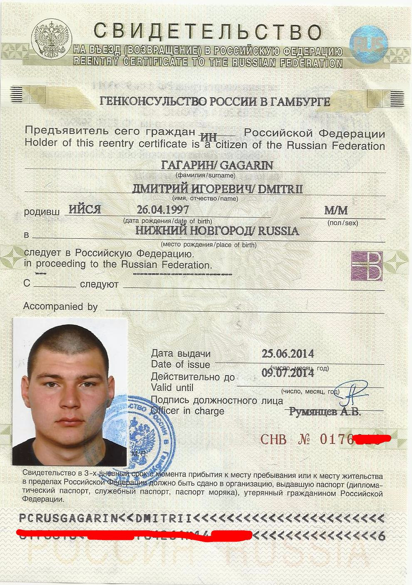

ЧАСТНОЕ СТРОИТЕЛЬНОЕ УНИТАРНОЕ ПРЕДПРИЯТИЕ "ДАМАКССЕРВИС"
Контактный телефон:
VELCOM +375 29 380 86 24
VELCOM +375 29 380 220 1
e-mail: info@damaks.by
Резвизиты:
Частное строительное унитарное предприятие "ДамаксСервис"
УНП 491067127 ОКПО 303571133000
Юридический адрес: 246029, г.Гомель, ул. Бр. Лизюковых, 14а, к. 2-17
Расчётный счет № 3012108120014 в Филиал №300 - Гомельское ОУ ОАО "АСБ Беларусбанк". 246001, г. Гомель, ул. Фрунзе, 6а
МФО 151501661
Директор Гребенников Максим Васильевич, действует на основании Устава
Свидетельство о включении в Реестр бытовых услуг
от 11 сентября 2015 года №000 000 026 469 (74.70.13)
ИП ГРЕБЕННИКОВ МАКСИМ ВАСИЛЬЕВИЧ
VELCOM +375 29 3808624
e-mail: maksimtut@gmail.com
Реквизиты:
ИП Гребенников Максим Васильевич
УНП 490968975
Адрес (место нахождения): 246036, г.Гомель, ул.Жукова, д.48, кв.5
Расчётный счет №3013015350019 в Филиал №300 - Гомельское ОУ ОАО "АСБ Беларусбанк",246001,
г.Гомель, ул.Фрунзе, 6а
МФО 151501661
Свидетельство о включении в Реестр бытовых услуг
от 14 сентября 2015 года №000 000 026 485 (74.70.13)
Свидетельство об акредитации индивидуального предпринимателя на оказание услуг в области
охраны труда от 31 августа 2015 года №139 (действительно до 31.08.2018г.)
Протокол комиссии по аккредитации от 31,08,2015г. №14.
